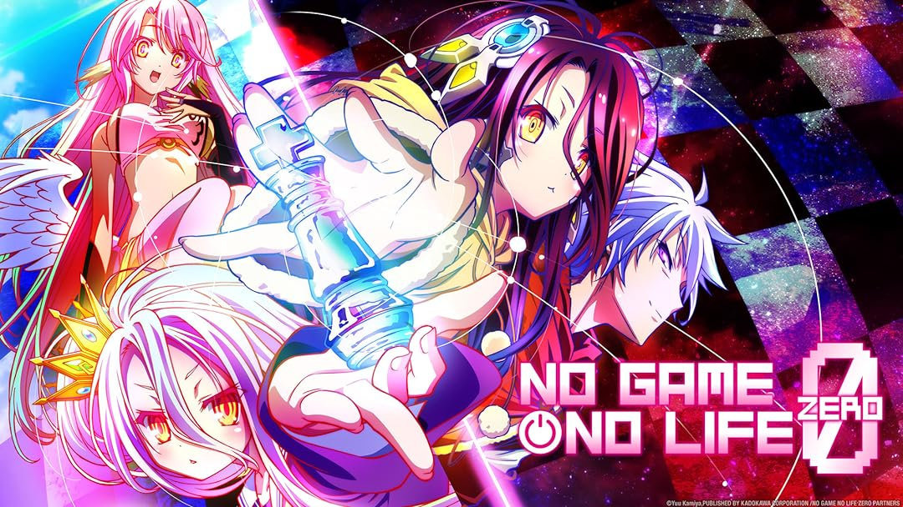
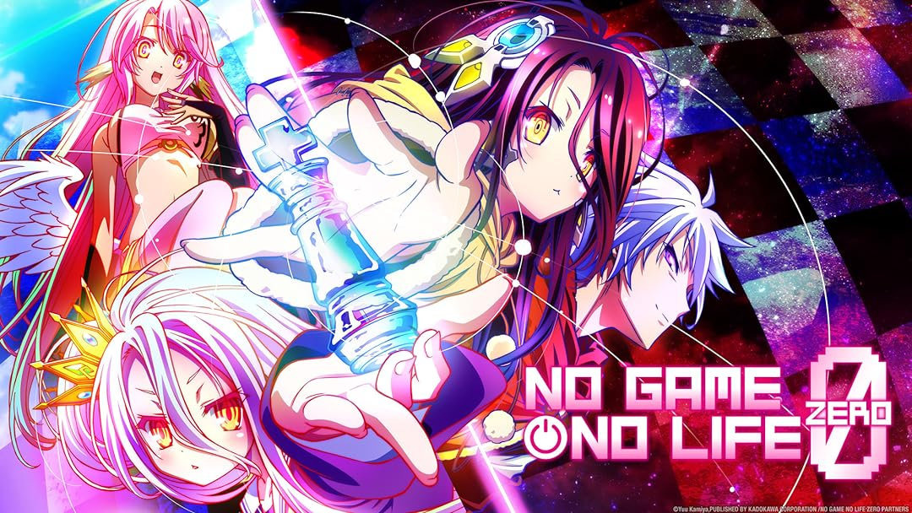
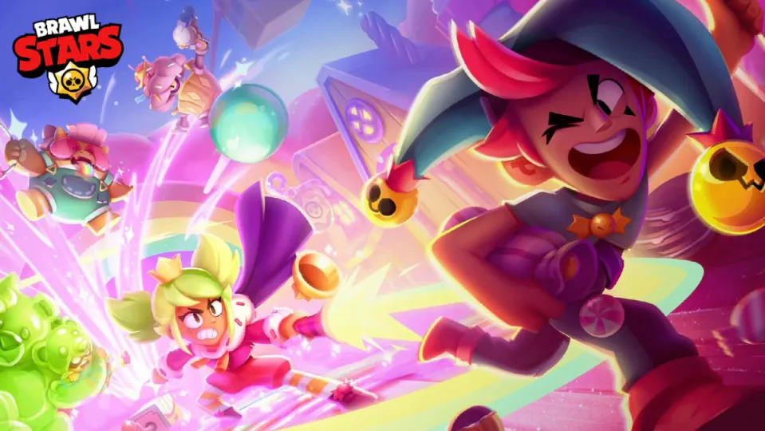
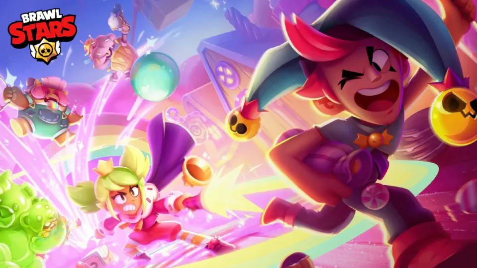

la programacion Es algo que estudio en mis tiempos libres e intento pulir para mejorar como desarrollador y no quedar atras en talleres o evaluaciones,
puede que muchas veces me quede atras y otras veces no entienda, pero siempre llega ese momento en el que logro entender todo sin tanto rodeo y es algo lo cual me apasiona.
Ver animes:
Soy un gran aficionado al anime, y algunos de mis favoritos incluyen One Piece, Bleach, No Game No Life, Sora no Method, y High Card.
"One Piece" es una aventura épica que me ha cautivado desde el primer episodio. La historia de Monkey D. Luffy y su tripulación de piratas en busca del legendario tesoro "One Piece" es emocionante y llena de momentos inolvidables. Me encanta cómo cada arco argumental nos presenta nuevos personajes y desafíos, manteniendo siempre la trama fresca y emocionante. Los valores de amistad, perseverancia y libertad que se destacan en esta serie me inspiran mucho.
"Bleach" es otro anime que ocupa un lugar especial en mi corazón. La historia de Ichigo Kurosaki, quien se convierte en un Shinigami y lucha contra Hollow para proteger a los vivos y a los muertos, es increíblemente apasionante. Las batallas son intensas y visualmente espectaculares, y la evolución de Ichigo como personaje es fascinante. Me gustan especialmente los diferentes mundos y mitologías que "Bleach" explora, como la Sociedad de Almas y el Hueco Mundo.
"No Game No Life" es una serie que combina mi amor por los juegos con una trama ingeniosa y personajes carismáticos. Los hermanos Sora y Shiro son prodigios en los juegos, y su aventura en el mundo de Disboard, donde todo se resuelve mediante juegos, es simplemente genial. La inteligencia y estrategia detrás de cada desafío me mantienen al borde de mi asiento, y la animación colorida y vibrante añade un toque único a la serie.
"Sora no Method" es un anime que me conmovió profundamente con su emotiva historia sobre amistad y recuerdos. La llegada de un misterioso platillo volante y su impacto en un grupo de amigos de la infancia en la ciudad de Lake Kiriya crea una trama llena de nostalgia y sentimientos encontrados. La hermosa animación y la banda sonora complementan perfectamente la narrativa, haciéndolo un anime memorable y conmovedor.
"High Card" es un anime que descubrí recientemente y que rápidamente se ha convertido en uno de mis favoritos. La serie se centra en un grupo de personajes que poseen cartas con poderes especiales, y las intrigas y batallas que surgen a partir de estas cartas son realmente emocionantes. La combinación de acción, misterio y elementos sobrenaturales hace que "High Card" sea una serie adictiva y entretenida.
Otros Animes
Además de estos, también disfruto de una amplia variedad de otros animes. Cada serie tiene algo único que ofrecer, ya sea una historia profunda, personajes bien desarrollados o un estilo de animación impresionante. El anime es una forma de entretenimiento que nunca deja de sorprenderme y emocionarme, y siempre estoy en busca de nuevas series para añadir a mi lista de favoritos.
Soy un gran fan de Neffex lo sigo ya mas de 7 años cuanto tenia apenas 10 remix, y algunas de sus canciones que realmente me han impactado son "Life", "Can't Replace That" y su nueva canción "Michael Jordan".
"Life" es una canción que me inspira cada vez que la escucho. La letra es motivadora y me recuerda que debo seguir persiguiendo mis sueños sin importar los obstáculos que encuentre en el camino. La energía y el ritmo de la canción son contagiosos, dándome ese impulso necesario para enfrentar cualquier desafío. Es una de esas canciones que puedes poner en repetición y nunca te cansas de escuchar.
"Can't Replace That" tiene una vibra nostálgica que me encanta. La canción habla sobre momentos y personas que son irremplazables, capturando perfectamente esos sentimientos de valor y apreciación por lo que tenemos. La mezcla de melodía y letra crea una atmósfera emotiva que realmente resuena conmigo, recordándome apreciar las cosas simples pero significativas de la vida.
"Michael Jordan" es la nueva canción de Neffex y ha sido una grata sorpresa. Con su ritmo pegajoso y letras que celebran la grandeza y la determinación, esta canción es un tributo perfecto al legendario jugador de baloncesto. La canción es motivacional y te llena de energía, perfecta para momentos en los que necesitas un empujón extra de confianza y ambición. Es una adición fantástica a su repertorio y una de mis favoritas instantáneas.
La música de Neffex siempre ha sido una fuente de inspiración para mí. Sus letras motivacionales y ritmos energizantes me acompañan en muchos momentos, dándome la fuerza para seguir adelante y alcanzar mis metas. Le agradezco a ese artista lo que soy hoy.
Para los video juegos, me considero algo bueno para ello, me acostumbro de una gran forma y los juego cuando no tengo mucho que hacer, como por entretenerme y botar todo mi estres y malas vibras del dia
son muy representativos para mi.

 



 
